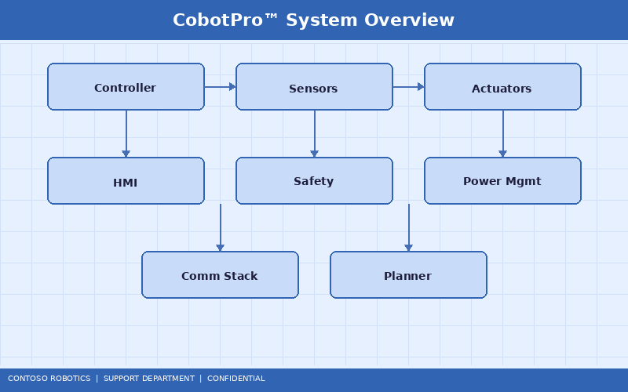
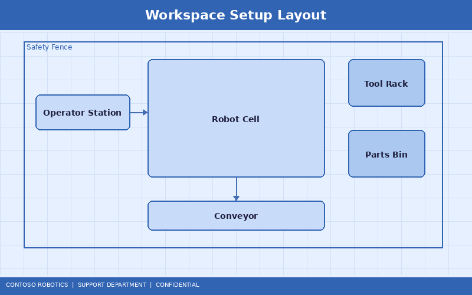
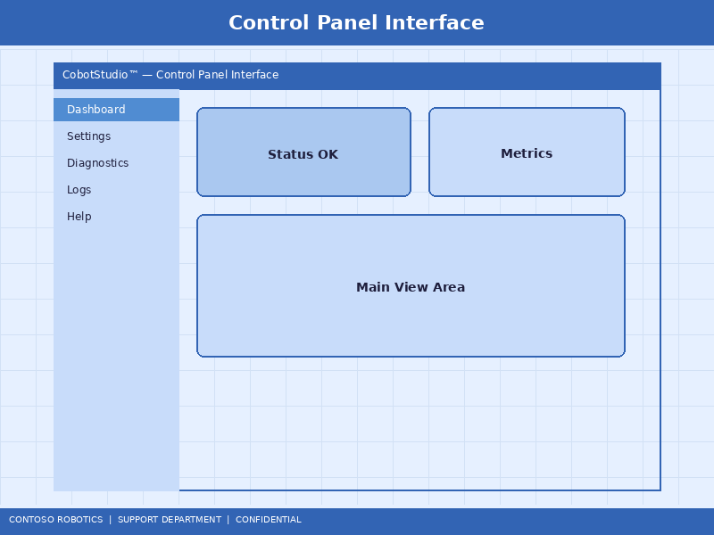

CoBot Pro Quick Start Guide
Welcome to the Contoso Robotics CoBot Pro Quick Start Guide. This document walks you through unboxing your CoBot Pro 500 or CoBot Pro 700, powering it on for the first time, running basic safety checks, and executing your first collaborative program. For full product specifications and feature details, refer to the Product Overview available from Contoso Robotics Marketing.

1. Package Contents
Before beginning setup, verify that your shipment includes the following items:
- CoBot Pro robotic arm (500 or 700 model)
- Control cabinet with integrated Safety Controller SC-100
- Teach pendant with USB-C cable
- Mounting bracket kit (M10 bolts, alignment pins, torque specifications sheet)
- Power cable (IEC 60320 C19, 3 m)
- EtherCAT patch cable (CAT6a shielded, 5 m)
- CoBot OS v4.2 USB recovery drive
- Quick Start Card and Safety Information booklet
If any item is missing or damaged, contact Contoso Robotics Support at support@contoso-robotics.com within 48 hours of delivery.
2. Site Preparation
Choose a mounting surface that meets the following requirements:
- Surface flatness: ±0.5 mm across the 200 mm mounting footprint
- Load capacity: CoBot Pro 500 weighs 28 kg; CoBot Pro 700 weighs 35 kg. The surface must support at least 3× the robot weight to account for dynamic forces.
- Clearance: Maintain a minimum 750 mm clearance radius around the base for the full reach envelope (500 mm for the Pro 500, 700 mm for the Pro 700).
- Ambient temperature: 5°C to 45°C operating range.

3. Mounting the Robot
- Position the mounting bracket on the work surface using the alignment pins.
- Secure the bracket with four M10 bolts torqued to 40 Nm (±2 Nm).
- Lift the CoBot Pro arm onto the bracket—use two people or a hoist for models over 30 kg.
- Engage the three-point locking mechanism and tighten the locking ring to 25 Nm.
- Verify the arm is level using the integrated spirit-level indicator on the base.
4. Cable Connections
Route cables through the designated channels on the mounting bracket to prevent pinching. Connect the following:
- Power: Connect the IEC C19 power cable from the control cabinet to a dedicated 200–240 V AC, 16 A circuit.
- EtherCAT: Connect the CAT6a cable between the robot arm base connector (Port A) and the control cabinet (EtherCAT IN).
- Teach pendant: Plug the USB-C cable into the front panel of the control cabinet.
- Emergency stop: Connect the external E-Stop daisy chain to the E-STOP IN terminal on the SC-100 safety controller.
5. First Power-On
- Turn the main breaker on the control cabinet to the ON position.
- The SC-100 Safety Controller performs a self-test (green LED blinks for 5 seconds, then solid green).
- The teach pendant displays the CoBot OS v4.2 boot screen. Boot takes approximately 45 seconds.
- When prompted, select your language, time zone, and network configuration (DHCP or static IP).
- Accept the End User License Agreement and register the robot serial number.

6. Initial Safety Checks
Before operating the robot, complete these mandatory safety validations:
- Emergency stop test: Press the E-Stop button on the teach pendant. Verify the robot loses power to all joints within 150 ms and the SC-100 reports STO (Safe Torque Off) status.
- Safety zone verification: Navigate to Settings → Safety → Zone Configuration and confirm the default restricted zone matches your workspace layout.
- Force limit test: Run the built-in collision detection test from Diagnostics → Force Limits. The default limit for human contact is 150 N (ISO/TS 15066 compliant).
- Speed limit test: Manually jog the robot and verify the TCP speed does not exceed 250 mm/s in collaborative mode.
For a comprehensive safety configuration guide, refer to the Safety Controller SC-100 Configuration Guide in the Support documentation.
7. Your First Program
Use the teach pendant to create a simple pick-and-place program:
- Open CoBot Studio IDE on the teach pendant (tap the Studio icon).
- Create a new project: File → New → Pick & Place Template.
- Teach the "Home" waypoint by manually guiding the arm to the start position and pressing Record Waypoint.
- Teach the "Pick" waypoint above the part bin.
- Add a gripper close command: Insert → I/O → Digital Output → DO1 HIGH.
- Teach the "Place" waypoint above the drop location.
- Add a gripper open command: Insert → I/O → Digital Output → DO1 LOW.
- Set the loop count to 10 and press Run.
The robot will execute the program at reduced speed (25% default) for the first run. After verifying the path, increase speed in 25% increments up to the rated production speed.
8. Connecting to the Network
The CoBot Pro supports Ethernet, Wi-Fi (optional adapter), and EtherCAT communication. To enable remote monitoring via CoBot Studio IDE on a desktop PC:
- Connect the control cabinet's LAN port to your facility network.
- Open CoBot Studio IDE on your PC and navigate to Connect → Discover Robots.
- Select your CoBot Pro from the device list (identified by serial number).
- Authenticate with the default credentials (change these immediately after first login).
For detailed system architecture information, including the EtherCAT communication bus and real-time control loop, see the System Architecture Overview in the Engineering documentation.
9. Getting Help
If you encounter issues during setup:
- Check the Joint Error Troubleshooting Guide for error codes displayed on the teach pendant.
- Visit the Contoso Robotics Knowledge Base at kb.contoso-robotics.com.
- Contact Support: +1-800-CONTOSO (Mon–Fri, 8 AM–8 PM EST).
- For warranty and return information, refer to the Product Overview from Contoso Robotics Marketing.
Document version 4.2.0 | Last updated: 2025-01-15 | Contoso Robotics Technical Support